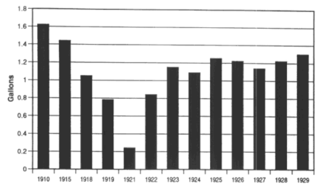
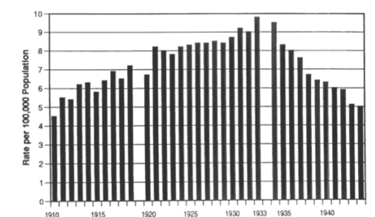

The right to bear arms, like freedom of speech, is often considered a right wing idea. However, recently a lot of people on the left have been buying guns. In light of current events, there have been many reports of gun seller struggling to stock their shelves at the influx of new buyers. In this essay I will present three arguments for the right to bear arms, from a liberal perspective.
Firstly, many people now believe that the police have shown themselves to be incompetent when it comes to protecting people. This can be seen in the case of Cassandra Fairbanks. Cassandra is a conservative journalist for 'The Gateway Pundit' and on June the 1st 2020 her home was surrounded by far left rioters, extremists taking advantage of the George Floyd protests. They shot fireworks at her home and banged on her windows, she was alone with her nine year old daughter. She called the police but hung up in disgust when they said " They didn't know when they could get there because of the protests". If the police can no longer 'protect and serve', as they are charged to do, it is expedient to defend one's self through other means. This can only be done if you have the right to bear arms. This is not the only such case, there are accounts of store owners being beaten for trying to defend their establishments from the violent elements of the mob. For this reason, it is understandable that so many people are now buying guns.
It also explains why more people in rural areas possess guns, as t would take longer for the police to reach them. In some times and places, such as large scale riots and remote locations, it is expedient to be able to defend yourself as in times of crisis the first move of the police will be to defend the state, not the civilians.
Secondly. I assert that it is the right and duty of any citizen to fight against an authoritarian state. The philosopher Locke said that the social contract of government was formed voluntarily in order to protect the rights of its members. When the state no longer carries out this duty, it is the duty of the citizens to remove the old government and put a new one in place. This is impractical, when the state has a monopoly on guns. In this, I posit that banning guns is the same as allowing tyranny. In the words of Martin Luther King Jr: "One has a moral responsibility to disobey unjust laws."
Of course there must be limitations to this, or else we would have constant uprisings. Pauline Maier explored this in her study 'From Resistance to Revolution', saying: "private individuals were forbidden to take force against their rulers either for malice or because of private injuries". She continues:"not just a few individuals, but the 'Body of the People' had to feel concerned". Revolution exists in a moral grey area, as it is a crime unless it is successful, and I maintain that it could only ever be possible when the population is allowed to be armed. This is not me calling on revolutionary action. Far from it, I know that revolution often causes more harm than good and that the best way to incite change is through democracy, but in a hypothetical situation when democracy is no longer functional and we face a world exemplified by, as Orwell put it in his novel 1984, "a boot stamping on a human face – forever.", then we must have the opportunity and tools to fight for our liberty. This right is an insurance against tyranny.
Finally, Let us say we do ban guns, what happens next? well, we can look at what happened in other famous prohibitions. In January 1919, the 18th amendment to the constitution of the united states was passed. This amendment prohibited the sale, importation, and production of "Intoxicating liquor". Dubbed the 'noble experiment', it was undertaken to reduce crime, corruption, social problems, reduce the tax burdens caused by prisons, and to improve health. It was an astounding failure, as crime rates soared and rates of alcohol consumption returned to pre-prohibition numbers. It would last from 1920 to 1933.
(Figure 1: Per Capita Consumption of Alcoholic Beverages (Gallons of Pure Alcohol) 1910-1929)
 (Figure 2: Rate of homicide 1910-1944)
The increase in murder rates is attributed to a rise in organised crime. By eliminating the supply, the government did nothing to decrease the demand. Organised criminals saw this as an opportunity for profit, and as such took advantage. You may say this is different as it is over 100 years ago, let me offer a more modern example. You may not have thought about it, but we are currently living through a prohibition. The war on drugs. on the 18th of June 1971, the war on drugs began. since this date, the amount of people in prison has skyrocketed. this has disproportionately effected black communities, and keeps them in a loop of poverty and crime – a loop which is, to any reasonable observer, the fault of the state. More expedient to my argument, it hasn't worked. It is not difficult to obtain drugs, as I'm sure most students could tell you.
If people will buy drugs whether or not it is illegal, is it not better to make it legal and regulate the sale? We should look to Portugal for the answer. They have created safe injection sites where people can use clean needles and uncut drugs without the fear of the law. This has seen a massive reduction in overdose deaths and, stunningly, a decrease in drug use rates. Now, let us come back to guns. If guns are sold safely, legally, and through the proper regulations then we should see a decrease in the woes associated with guns. If gun sale is legal, we will see the criminal outfits currently supplying illegal guns shrivel and thus the homicide rate decrease.
The lesson we can learn from these examples, is that when the state bans something it loses control of it; and that this always causes the people to suffer.
These arguments were meant to show we shouldn't out right ban guns. They said nothing about gun control. The next segment of this essay will explore reasonable restrictions on the right to bear arms.
First however, I must dispute a common idea. Many people wish to ban specific types of guns, specifically those they describe as "automatic", "semi-automatic", and "military grade". First of all, military grade weapons are already banned for public use. Secondly, all that 'semi-automatic' means is that for every time the trigger is pressed, a bullet is fired – that is most guns. Many of the people who want these restrictions know nothing of firearms. Most commonly, people will say that assault rifles, specifically AR15's, should be banned. They say this as they believe that the faster fire rate will allow for more capability of death. However, handguns are responsible for most gun deaths. we can see that these arguments are bunk.
That is not to say I do not want restrictions on guns. On the contrary, I believe in common sense gun control. I believe that to buy a gun you should have to go through a background check, a psychological evaluation, and gun safety training. I think these measures will greatly decrease the necessary danger of the right to bare arms.
Because there will inevitably be dangers in allowing people to allow guns, but not allowing them to own guns makes them vulnerable to worse dangers.
RT News: 'Ridiculous lawlessness': Journalist Cassandra Fairbanks says her home ATTACKED by rioting mob as 9-year-old daughter hid inside
Wikipedia: Right of revolution
Book: 'The second treatise of government' by John Locke
Study: 'From Resistance to Revolution' - Pauline Maier
Cato Institute Policy Analysis No. 157: Alcohol Prohibition Was a Failure, July 17, 1991,Mark Thornton
(Figure 1) Clark Warburton, The Economic Results of Prohibition (New York: Columbia University Press, 1932), pp. 23-26, 72
(Figure 2) U.S. Bureau of the Census, Historical Statistics of the United States, Colonial Times to 1970 (Washington:Government Printing Office, 1975), part 1, p. 414